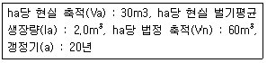
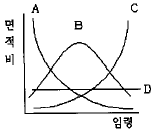

산림산업기사(구60문항) (2004-05-23 기출문제)
1과목: 임의구분
1. 유아등을 이용한 솔나방의 구제 적기는?
- 5월하순∼6월중순
- 6월하순∼7월중순
- 7월하순∼8월중순
- 8월하순∼9월중순
(정답률: 알수없음)

2. 다음 중 대기오염의 검지식물로 사용되는 식물은?
- 향나무
- 사철나무
- 전나무
- 은행나무
(정답률: 알수없음)
3. 묘포에 발생하는 모잘록병에 방제를 위해서 가장 중점을 두어야 하는 것은?
- 토양반응이 산성이 되게 한다
- 칼륨비료를 충분하게 준다
- 배수와 통풍이 잘되고 과습하지 않도록 한다
- 너무 두텁게 파종이 안되도록 한다
(정답률: 알수없음)
4. 삼나무의 주요 병해인 붉은 마름병균은 다음 중 어느 균류에 속하는가?
- 자낭균
- 담자균
- 불완전균
- 조균
(정답률: 알수없음)
5. 산림에 소나무 혹병이 발생하였다면 다음 중 어느 나무를 없애야 하는가?
- 오리나무
- 상수리나무
- 단풍나무
- 자작나무
(정답률: 알수없음)
6. 솔잎혹파리는 어느 곳에서 월동하는가?
- 나무껍질 사이에 숨어서
- 땅속에 숨어서
- 솔잎사이에 끼여서
- 나무 속에 파고 들어가서
(정답률: 알수없음)
7. 수병의 주요 전반방법 중 매개충에 의하여 전반되는 수병은?
- 잣나무털녹병균
- 근두암종병균(뿌리혹병)
- 대추나무 빗자루병
- 오리나무 갈색무늬병균
(정답률: 알수없음)
8. 다음 중 잎을 갉아먹는 해충은?
- 향나무하늘소
- 전나무잎응애
- 오리나무잎벌레
- 밤바구미
(정답률: 알수없음)
9. 메타 20% 유제 100 cc를 0.1%로 희석하려고 할 때 필요한 물의 양은? (단, 원액의 비중은 1이다.)
- 1,000 cc
- 10,000 cc
- 19,900 cc
- 29,900 cc
(정답률: 알수없음)
10. 생물적 방제에 있어 천적을 선택할 때의 고려사항이 아닌 것은?
- 천적은 단식성이어야 한다
- 천적은 증식력이 커야 한다
- 천적에 기생하는 2차기생봉이 있어야 한다
- 천적은 해충의 출현과 그의 생활사가 일치하여야 한다
(정답률: 알수없음)
11. 강송 1-1 묘의 규격은?
- 간장 16cm 이상, 근원경 5mm 이상
- 간장 17cm 이상, 근원경 6mm 이상
- 간장 20cm 이상, 근원경 4mm 이상
- 간장 30cm 이상, 근원경 7mm 이상
(정답률: 알수없음)
12. 종자의 발아촉진 처리 방법이 아닌 것은?
- 노천매장, 냉습적
- 황산처리, 열탕처리
- 침수처리, 기계적처리
- 오옥신, 리조칼린 처리
(정답률: 알수없음)
13. 다음 설명 중 인공조림의 장점이 아닌 것은?
- 조림수종 및 품종을 임의로 선택할 수 있다.
- 획일적인 관리를 할 수 있다.
- 미임목지 조림에 적합하다.
- 조림 보육 경비가 적게 든다.
(정답률: 알수없음)
14. 묘목을 일시 가식하는데 옳지 않은 것은?
- 굴취한 묘목을 땅에 잠시 뿌리를 묻어두는 것이다.
- 가식은 운반 도중 약해진 묘목을 회복시키기 위해서 한다.
- 가식기간이 길지 않을 때는 다발채로 흙에 묻는다.
- 가식장소는 응달이 좋고 모래땅이 좋다.
(정답률: 알수없음)
15. 묘목 포장을 할 때 잣나무 2 - 2의 곤포당 본수는?
- 2,000본
- 1,500본
- 1,000본
- 500본
(정답률: 알수없음)
16. 소나무 등의 양수를 조림할 경우 밑깎기작업으로 적합한 방법은?
- 전면깎기
- 줄깎기
- 둘레깎기
- 평깎기
(정답률: 알수없음)
17. 가지치기에 관한 설명으로 옳지 못한 것은?
- 가지치기는 많은 작업비가 소요되므로 장차 우량목 생산 대상목에 한하여 실시해야 한다.
- 우량목 생산을 위한 가지치기 도구로는 도끼나 낫 등이 있다.
- 가지치기 요령으로는 절단면이 가급적 적게, 매끈하게 실시하여 빨리 상처 부위가 아물도록 해야 한다.
- 가지치기 시기로는 침엽수인 경우 수액이동이 왕성하지 않는 시기를 택해야 한다.
(정답률: 알수없음)
18. 측방 천연 하종갱신을 위하여 군상개벌작업을 할 때 군상지의 면적은 얼마가 가장 적당한가?
- 0.1 ha
- 0.5 ha
- 1 ha
- 2 ha
(정답률: 알수없음)
19. 다음 중 정성 간벌이 아닌 것은?
- 하층간벌
- 상층간벌
- 기계적 간벌
- 본수에 의한 간벌
(정답률: 알수없음)
20. 산벌작업에서 벌채대상을 중용목, 피압목으로 하고, 형질불량 우세목, 준우세목도 벌채대상이 될 수 있는 벌채방법은?
- 예비벌
- 하종벌
- 후벌
- 택벌
(정답률: 알수없음)
2과목: 임의구분
21. 다음 중 비료목으로 적당하지 않은 수종은?
- 싸리나무
- 자귀나무
- 오리나무
- 사시나무
(정답률: 알수없음)
22. 느티나무의 특성을 설명한 것 중 틀린 것은?
- 학명이 Zelkoba serrata 이다.
- 온대지방에서 낙엽교목이다.
- 잎은 대생한다.
- 심근성으로 어릴 때는 맹아력이 좋다.
(정답률: 알수없음)
23. 다음 수종 중 종자의 성숙 시기가 가장 늦은 것은?
- 버드나무
- 벚나무
- 해송
- 회화나무
(정답률: 알수없음)
24. 중림작업이란 어떤 형태를 말하는가?
- 동일한 임지가 상층과 하층으로 구성되어 있는 수풀을 의미한다.
- 혼효림으로 되어 있는 수풀
- 활엽수 임분 중 수령이 30 ~ 40년생된 수풀
- 침엽수 임분 중 수령이 30 ~ 40년생된 수풀
(정답률: 알수없음)
25. 다음 수종 중 매년 또는 1년 주기성으로 결실하는 수종으로 짝지어진 것은?
- 편백, 들메나무
- 낙엽송 , 스트로브잣나무
- 삼나무, 전나무
- 소나무, 자작나무
(정답률: 알수없음)
26. 체인톱의 기화기(캬브레타) 조정나사가 있다. 엔진공전시 체인이 함께 따라돈다. 이때 조정 대상이 되는 나사는?
- L 나사
- H 나사
- LA 나사
- 장력조정나사
(정답률: 알수없음)
27. 체인톱의 안전장치가 아닌 것은?
- 진동 완충 손잡이
- 톱날 안내판
- 톱날집
- 뒤손보호판
(정답률: 알수없음)
28. 산림작업에 미치는 환경적 영향으로 볼 수 없는 것은?
- 기계의 소음, 진동, 배기가스 등
- 먼지나 극독물에 의한 신체장해
- 인근 작업자와의 불화
- 추위, 더위, 강우, 강설 등
(정답률: 알수없음)
29. 산림작업용 안전작업복 상의의 어깨 및 등 부위를 "오렌지 색"등으로 표시하는 이유는?
- 깨끗하게 보이려고
- 식별이 용이하게 하려고
- 튼튼하게 하려고
- 안전복임을 표시하려고
(정답률: 알수없음)
30. 다음의 집재방법 중에서 임지 훼손이 가장 심한 방법은?
- 목수라 집재
- 토수라 집재
- 플라스틱수라 집재
- 강선 집재
(정답률: 알수없음)
31. 불도우저의 정비 비율로 적합한 것은?
- 0.4
- 0.6
- 0.8
- 1.0
(정답률: 알수없음)
32. 산림작업도구와 능률과의 관계를 바르게 설명한 것은?
- 도구는 무거울수록 내려치는 속도를 빨리할 수 있다.
- 도구의 날은 끝 각도가 적을수록 나무가 잘 잘린다.
- 도구의 날은 무딜수록 땅을 잘판다.
- 자루의 길이는 작업자 팔길이와 같아야 한다.
(정답률: 알수없음)
33. 다음 예불기의 일반적인 유지관리 요령으로 틀린 것은?
- 공기여과장치를 깨끗이 청소한다.
- 50시간정도 사용 후 마다 연료탱크를 깨끗한 휘발유로 세척한다.
- 장기간 사용하지 않을때는 연료를 제거하고 건조한 곳에 보관한다.
- 하루의 작업이 끝나면 매일매일 그냥 보관한다.
(정답률: 알수없음)
34. 2행정 내연기관에서 행정용적이 40㎝3, 간극용적이 10㎝3이라면 압축비는 얼마인가?
- 2 : 1
- 3 : 1
- 4 : 1
- 5 : 1
(정답률: 알수없음)
35. 예불기를 사용할 때 날의 윤활작용을 위해서 무엇을 사용하는 것이 가장 좋은가?
- 엔진오일
- 혼합유
- 구리스
- 폐유
(정답률: 알수없음)
36. 다음 설명 중 틀린 것은?
- 4행정불꽃점화기관은 흡기→ 압축→ 팽창→ 배기 행정 순으로 작동한다.
- 4행정압축점화기관은 디젤기관이라고 부르기도 하며, 흡기행정시 혼합연료를 흡입하여 압축→ 팽창→ 배기 순으로 작동한다.
- 2행정기관은 동력을 얻기위하여 1회의 크랭크축 회전만이 필요하다. 따라서 이론적으로 배기량이 같으면 4행정기관에 비하여 2배의 출력을 얻을 수 있다.
- 2행정기관은 피스톤이 상승하면서 배기공과 소기공이 모두 막히면 혼합가스가 압축되며, 이와 동시에 크랭크 케이스속의 압력이 낮아져서 기화기에서 형성된 혼합가스가 흡인구를 통하여 크랭크케이스로 들어온다. 피스톤이 상사점에 이르면 점화프러그에 의해 점화되어 연소가 일어난다.
(정답률: 알수없음)
37. 다음 중 기계화 벌목집재 장비가 아닌 것은?
- 트리펠러(Tree feller)
- 스크레이퍼(Scraper)
- 그래플 소(Grapple saw)
- 포워더(forwarder)
(정답률: 알수없음)
38. 임업기계 사용시 통일된 작업체계를 세울 수 있고, 작업지연의 발생이 줄어들게 되어 높은 작업능률을 발휘할 수 있는 임분내 임목의 공간적 분포형태는 무엇인가?
- 균일형
- 비균일형
- 군집형
- 산재형
(정답률: 알수없음)
39. 일반적으로 체인톱 점화플러그의 양극간격은 얼마인가?
- 0.1 ∼ 0.2mm
- 0.2 ∼ 0.3mm
- 0.3 ∼ 0.4mm
- 0.4 ∼ 0.5mm
(정답률: 알수없음)
40. 임업기계의 연료비에서 일반적으로 윤활유비는 연료비의 몇 %정도 소요되는가?
- 10%
- 20%
- 30%
- 40%
(정답률: 알수없음)
3과목: 임의구분
41. 유령급 및 노령급의 임분 이외의 중간영급에 흔히 적용하는 법은?
- 임목비용가
- 글라제르(Glaser)식
- 토지비용가
- 임목매매가
(정답률: 알수없음)
42. 100ha의 산림을 조사한 결과 다음과 같은 값을 얻었다고 한다면,카메랄탁세법에 의한 표준 연간 벌채량은 총 얼마인가?

- 45m3
- 50m3
- 55m3
- 60m3
(정답률: 알수없음)
43. 다음 사항 중 임지의 특성이 아닌 것은?
- 임지는 임업 이외의 용도로 변경 될 가능성이 많다.
- 임지는 소모성이 없기 때문에 유지비가 적게 든다.
- 임지는 넓고 험하며 높은 지대에 위치하기 때문에 집약적 작업이 쉽다.
- 수직적으로 생육환경이 크게 다르므로 여러 가지 수종이 생육한다.
(정답률: 알수없음)
44. 임업의 경제적 특성이 아닌 것은?
- 임업생산은 조방적이다
- 임목의 성숙기가 일정하지 않다.
- 육성임업과 채취임업이 병존한다.
- 공익성이 크므로 제한성이 많다.
(정답률: 알수없음)
45. 임지 기망가의 크기에 영향을 주는 인자의 설명이 잘못된 것은?
- 이율이 작을수록 최대값이 빨리 온다.
- 주벌 수익의 증대속도가 빨리 감퇴할수록 최대값이 빨리 온다.
- 간벌 수익이 클수록 최대값이 빨리 온다.
- 관리비는 임지기망가가 최대로 되는 시기와는 관계가 없다.
(정답률: 알수없음)
46. 토지순수익 최대의 벌기령에서 벌기령에 영향을 미치는 요소가 아닌 것은?
- 이율
- 주벌수확
- 간벌수확
- 관리자본
(정답률: 알수없음)
47. 영림계획에 관한 다음 내용 중 틀린 것은?
- 임종은 인공림· 천연림의 구분이다
- 영급은 10년을 한 단위로 한다
- 임령은 분모에 평균을 표시한다
- 소밀도는 조사면적에 대한 입목의 수관면적이 차지하는 비율을 백분율로 표시한다
(정답률: 알수없음)
48. 다음 중 임반의 표시방법으로 알맞는 것은?
- 1, 2, 3, …
- 가, 나, 다, …
- Ⅰ, Ⅱ, Ⅲ, …
- ㄱ, ㄴ, ㄷ, …
(정답률: 알수없음)
49. 다음 그림에서 이상적 구성· 보속생산이 가능한 산림구조는?

- A
- B
- C
- D
(정답률: 알수없음)
50. 다음 중 설명이 틀린 것은?
- 임가소득은 임업소득, 농업소득, 기타소득을 더한 값이다.
- 임업의존도는 임업소득으로 임가소득을 나누어 100을 곱한 값이다.
- 임업소득은 임업조수익에서 임업경영비를 뺀 값이다.
- 임업소득율은 임업소득에서 임업조수익을 나누어 100을 곱한 값이다.
(정답률: 알수없음)
51. 콘크리트의 습윤상태의 표준 보호기간으로 알맞는 것은?
- 보통시멘트 5일 이상, 조강시멘트 3일 이상
- 보통시멘트 7일 이상, 조강시멘트 6일 이상
- 보통시멘트 9일 이상, 조강시멘트 7일 이상
- 보통시멘트 11일 이상, 조강시멘트 10일 이상
(정답률: 알수없음)
52. 돌쌓기 시공시 특히 주의하여 쌓아야 할 점은?
- 돌의 상태
- 돌의 성질
- 돌의 무게
- 돌의 배치
(정답률: 알수없음)
53. 돌을 쌓아 올릴 때 모르타르나 콘크리트를 사용하여 돌쌓는 방법은?
- 메쌓기
- 찰쌓기
- 골쌓기
- 궤쌓기(켜쌓기)
(정답률: 알수없음)
54. 석재 중에서 치수를 특별한 규격에 맞도록 지정하여 깨낸 것은?
- 견치돌
- 마름돌
- 야면석
- 막깬돌
(정답률: 알수없음)
55. 횡단배수구가 중점적으로 설치되는 장소가 아닌 것은?
- 평상시에는 출수가 없지만 강우시에는 출수가 있는 곳
- 유하방향의 종단물매의 변이점
- 구조물의 앞이나 뒤
- 외쪽물매 때문에 옆도랑물이 역류하는 곳
(정답률: 알수없음)
56. 가선집재작업의 특징과 거리가 먼 것은?
- 작업생산성이 높다.
- 장비구입비가 비싸다.
- 급경사지에서 작업이 가능하다.
- 주위 환경 및 잔존 임분에 피해가 적다.
(정답률: 알수없음)
57. 산림작업조직을 편성하는 경우에 유의하여야 할 사항과 거리가 먼 것은?
- 노동의 안전화
- 노동강도의 경감화
- 노동생산의 극대화
- 작업기간의 단축화
(정답률: 알수없음)
58. 경사지대에서 임도밀도가 20m/ha이고 임도효율요인이 8일 때 평균집재거리는?
- 0.2km
- 0.3km
- 0.4km
- 0.5km
(정답률: 알수없음)
59. 콘크리트공사의 강도를 좌우하는 요인 중에서 가장 큰 요인은?
- 골재량
- 양생기간
- 물-시멘트 비
- 다지기
(정답률: 알수없음)
60. 사방댐의 3가지 주요 기능이 아닌 것은?
- 계상물매를 완화하고 종침식을 방지하는 작용
- 산각을 고정하여 붕괴를 방지하는 작용
- 홍수조절을 위한 집수작용
- 토사의 이동을 방지하는 작용
(정답률: 알수없음)